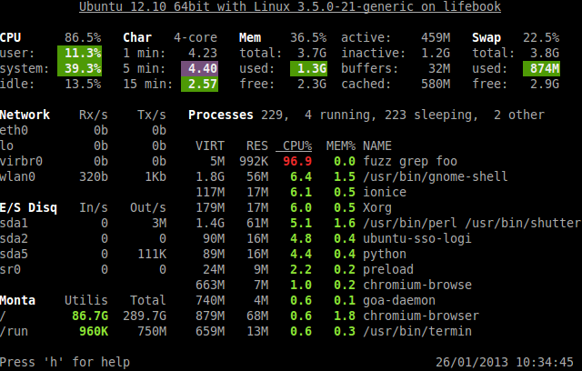
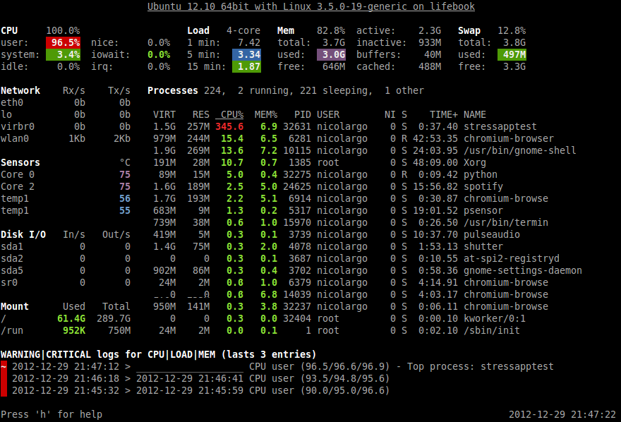
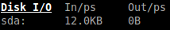
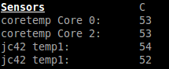

Glances
This manual describes Glances version 2.0.1.
Copyright © 2012-2014 Nicolas Hennion <nicolas@nicolargo.com>
June 2014
Table of Contents
Introduction
Glances is a cross-platform curses-based system monitoring tool which aims to present a maximum of information in a minimum of space, ideally to fit in a classical 80x24 terminal or higher to have additional information. It can adapt dynamically the displayed information depending on the terminal size.
Glances can also work in client/server mode. Remote monitoring could be done via terminal or web interface.
Glances is written in Python and uses the psutil library to get information from your system.
Console (80x24)
Full view (>80x24)
Web interface (Firefox)

Usage
Client/Server Mode
If you want to remotely monitor a machine, called server, from another one, called client, just run on the server:
server$ glances -s
and on the client:
client$ glances -c @server
where @server is the IP address or hostname of the server.
In server mode, you can set the bind address -B ADDRESS and listening TCP port -p PORT.
In client mode, you can set the TCP port of the server -p PORT.
You can also set a password to access to the server --password.
Default binding address is 0.0.0.0 (Glances will listen on all the network interfaces) and TCP port is 61209.
In client/server mode, limits are set by the server side.
Glances is IPv6 compatible. Just use the -B :: option to bind to all IPv6 addresses.
As an experimental feature, if Glances server is not detected by the client, the latter will try to grab stats using the SNMP protocol:
client$ glances -c @snmpserver
Known issues: grab using SNMP is only validated for GNU/Linux with SNMP v2/2c server.
Web Server Mode
If you want to remotely monitor a machine, called server, from any device with a web browser, called client, just run on the server:
server$ glances -w
and on the client enter the following URL in your favorite web browser:
http://@server:61208
where @server is the IP address or hostname of the server.
The Glances web interface follows responsive web design principles.
Screenshot from Chrome on Android

Command Reference
Command-Line Options
| -h, --help | show this help message and exit |
| -V, --version | show program's version number and exit |
| -b, --byte | display network rate in byte per second |
| -B BIND_ADDRESS, --bind BIND_ADDRESS | |
| bind server to the given IPv4/IPv6 address or hostname | |
| -c CLIENT, --client CLIENT | |
| connect to a Glances server by IPv4/IPv6 address or hostname | |
| -C CONF_FILE, --config CONF_FILE | |
| path to the configuration file | |
| --disable-bold | disable bold mode in the terminal |
| --disable-diskio | |
| disable disk I/O module | |
| --disable-fs | disable file system module |
| --disable-network | |
| disable network module | |
| --disable-sensors | |
| disable sensors module | |
| --disable-process | |
| disable process module | |
| --disable-log | disable log module |
| --output-csv OUTPUT_CSV | |
| export stats to a CSV file | |
| -p PORT, --port PORT | |
| define the client/server TCP port [default: 61209] | |
| --password | define a client/server password from the prompt or file |
| -s, --server | run Glances in server mode |
| --snmp-community SNMP_COMMUNITY | |
| SNMP community | |
| --snmp-port SNMP_PORT | |
| SNMP port | |
| --snmp-version SNMP_VERSION | |
| SNMP version (1, 2c or 3) | |
| --snmp-user SNMP_USER | |
| SNMP username (only for SNMPv3) | |
| --snmp-auth SNMP_AUTH | |
| SNMP authentication key (only for SNMPv3) | |
| -t TIME, --time TIME | |
| set refresh time in seconds [default: 3 sec] | |
| -w, --webserver | |
| run Glances in Web server mode | |
| -1, --percpu | start Glances in per CPU mode |
Interactive Commands
The following commands (key pressed) are supported while in Glances:
- a
Sort process list automatically
- If CPU iowait >60%, sort processes by I/O read and write
- If CPU >70%, sort processes by CPU usage
- If MEM >70%, sort processes by memory usage
- b
- Switch between bit/s or Byte/s for network I/O
- c
- Sort processes by CPU usage
- d
- Show/hide disk I/O stats
- f
- Show/hide file system stats
- h
- Show/hide the help screen
- i
- Sort processes by I/O rate
- l
- Show/hide log messages
- m
- Sort processes by MEM usage
- n
- Show/hide network stats
- p
- Sort processes by name
- q
- Quit
- s
- Show/hide sensors stats
- t
- View network I/O as combination
- u
- View cumulative network I/O
- w
- Delete finished warning log messages
- x
- Delete finished warning and critical log messages
- z
- Show/hide processes stats
- 1
- Switch between global CPU and per-CPU stats
Configuration
Caution! Glances version 1.x configuration files are not compatible with the version 2.x.
No configuration file is mandatory to use Glances.
Furthermore a configuration file is needed to set up limits, disks or network interfaces to hide and/or monitored processes list.
By default, the configuration file is under:
| Linux: | /etc/glances/glances.conf |
|---|---|
| *BSD and OS X: | /usr/local/etc/glances/glances.conf |
| Windows: | %APPDATA%\glances\glances.conf |
On Windows XP, the %APPDATA% path is:
C:\Documents and Settings\<User>\Application Data
Since Windows Vista and newer versions:
C:\Users\<User>\AppData\Roaming
You can override the default configuration, located in one of the above directories on your system, except for Windows.
Just copy the glances.conf file to your $XDG_CONFIG_HOME directory, e.g., on Linux:
mkdir -p $XDG_CONFIG_HOME/glances
cp /usr/share/doc/glances/glances.conf $XDG_CONFIG_HOME/glances/
On OS X, you should copy the configuration file to ~/Library/Application Support/glances/.
Anatomy Of The Application
Legend
Note: only stats with colored background will be logged in the alert view.
Header

The header shows the hostname, OS name, release version, platform architecture and system uptime (on the upper right corner). Additionally, on GNU/Linux, it also shows the kernel version.
In client mode, the server connection status is displayed.
Connected:

Disconnected:

CPU
Short view:

If enough horizontal space is available, extended CPU information are displayed.
Extended view:

To switch to per-CPU stats, just hit the 1 key:

The CPU stats are shown as a percentage and for the configured refresh time. The total CPU usage is displayed on the first line.
Note: limit values can be overwritten in the configuration file under the [cpu] and/or [percpu] sections.
Load

On the No Sheep blog, Zachary Tirrell defines the load average [1]:
"In short it is the average sum of the number of processes waiting in the run-queue plus the number currently executing over 1, 5, and 15 minutes time periods."
Glances gets the number of CPU core to adapt the alerts. Alerts on load average are only set on 15 minutes time period. The first line also displays the number of CPU core.
Note: limit values can be overwritten in the configuration file under the [load] section.
Memory
Glances uses two columns: one for the RAM and one for the SWAP.

If enough space is available, Glances displays extended information for the RAM:

Alerts are only set for used memory and used swap.
Note: limit values can be overwritten in the configuration file under the [memory] and/or [memswap] sections.
Network

Glances displays the network interface bit rate. The unit is adapted dynamically (bits per second, kbits per second, Mbits per second, etc).
Alerts are only set if the maximum speed per network interface is available (see sample in the configuration file).
Note: it is possibile to define a list of network interfaces to hide and per-interface limit values in the [network] section of the configuration file.
Disk I/O
Glances displays the disk I/O throughput. The unit is adapted dynamically.
There is no alert on this information.
Note: it is possible to define a list of disks to hide under the [diskio] section in the configuration file.
File System

Glances displays the used and total file system disk space. The unit is adapted dynamically.
Alerts are set for used disk space.
Note: limit values can be overwritten in the configuration file under the [filesystem] section.
Sensors
Glances can displays the sensors information using lm-sensors, hddtemp and batinfo [2].
All of the above libraries are available only on Linux.
As of lm-sensors, a filter is being applied in order to display temperature only.
There is no alert on this information.
Note: limit values can be overwritten in the configuration file under the [sensors] section.
Processes List
Compact view:

Full view:

Three views are available for processes:
- Processes summary
- Optional monitored processes list (see below)
- Processes list
The processes summary line display:
- Tasks number (total number of processes)
- Threads number
- Running tasks number
- Sleeping tasks number
- Other tasks number (not running or sleeping)
- Sort key
By default, or if you hit the a key, the processes list is automatically sorted by:
- CPU if there is no alert (default behavior)
- CPU if a CPU or LOAD alert is detected
- MEM if a memory alert is detected
- Disk I/O if a CPU iowait alert is detected
The number of processes in the list is adapted to the screen size.
- CPU%
- % of CPU used by the process
- MEM%
- % of MEM used by the process
- VIRT
- Total program size - Virtual Memory Size (VMS)
- RES
- Resident Set Size (RSS)
- PID
- Process ID
- USER
- User ID
- NI
- Nice level of the process (niceness other than 0 is highlighted)
- S
- Process status (running process is highlighted)
- TIME+
- Cumulative CPU time used
- IOR/s
- Per process I/O read rate (in Byte/s)
- IOW/s
- Per process I/O write rate (in Byte/s)
- COMMAND
- Process command line (process name is highlighted)
Process status legend:
- R
- Running
- S
- Sleeping (may be interrupted)
- D
- Disk sleep (may not be interrupted)
- T
- Traced / Stopped
- Z
- Zombie
Note: limit values can be overwritten in the configuration file under the [process] section.
Monitored Processes List
The monitored processes list allows user, through the configuration file, to group processes and quickly show if the number of running processes is not good.

Each item is defined by:
- description: description of the processes (max 16 chars).
- regex: regular expression of the processes to monitor.
- command (optional): full path to shell command/script for extended stat. Should return a single line string. Use with caution.
- countmin (optional): minimal number of processes. A warning will be displayed if number of processes < count.
- countmax (optional): maximum number of processes. A warning will be displayed if number of processes > count.
Up to 10 items can be defined.
For example, if you want to monitor the Nginx processes on a Web server, the following definition should do the job:
[monitor] list_1_description=Nginx server list_1_regex=.*nginx.* list_1_command=nginx -v list_1_countmin=1 list_1_countmax=4
If you also want to monitor the PHP-FPM daemon processes, you should add another item:
[monitor] list_1_description=Nginx server list_1_regex=.*nginx.* list_1_command=nginx -v list_1_countmin=1 list_1_countmax=4 list_1_description=PHP-FPM list_1_regex=.*php-fpm.* list_1_countmin=1 list_1_countmax=20
In client/server mode, the list is defined on the server side. A new method, called getAllMonitored, is available in the APIs and get the JSON representation of the monitored processes list.
Alerts are set as following:
Logs

A log messages list is displayed in the bottom of the screen if (and only if):
- at least one WARNING or CRITICAL alert was occurred
- space is available in the bottom of the console/terminal
Each alert message displays the following information:
- start datetime
- duration if alert is terminated or ongoing if the alert is still in progress
- alert name
- {min,avg,max} values or number of running processes for monitored processes list alerts
Other Outputs
It is possible to export statistics to CSV file.
$ glances --output-csv /tmp/glances.csv
CSV files have two lines per stats:
- Stats description
- Stats (comma separated)
API Documentation
Glances uses a XML-RPC server and can be used by another client software.
API documentation is available at https://github.com/nicolargo/glances/wiki/The-Glances-2.x-API-How-to.
Support
To report a bug or a feature request use the bug tracking system at https://github.com/nicolargo/glances/issues.
Feel free to contribute!
| [1] | http://nosheep.net/story/defining-unix-load-average/ |
| [2] | https://github.com/nicolargo/batinfo |